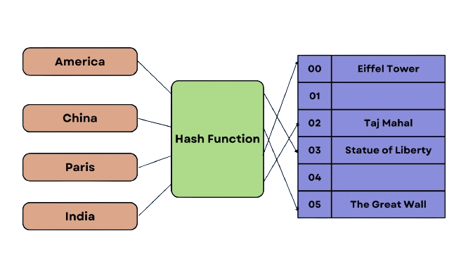
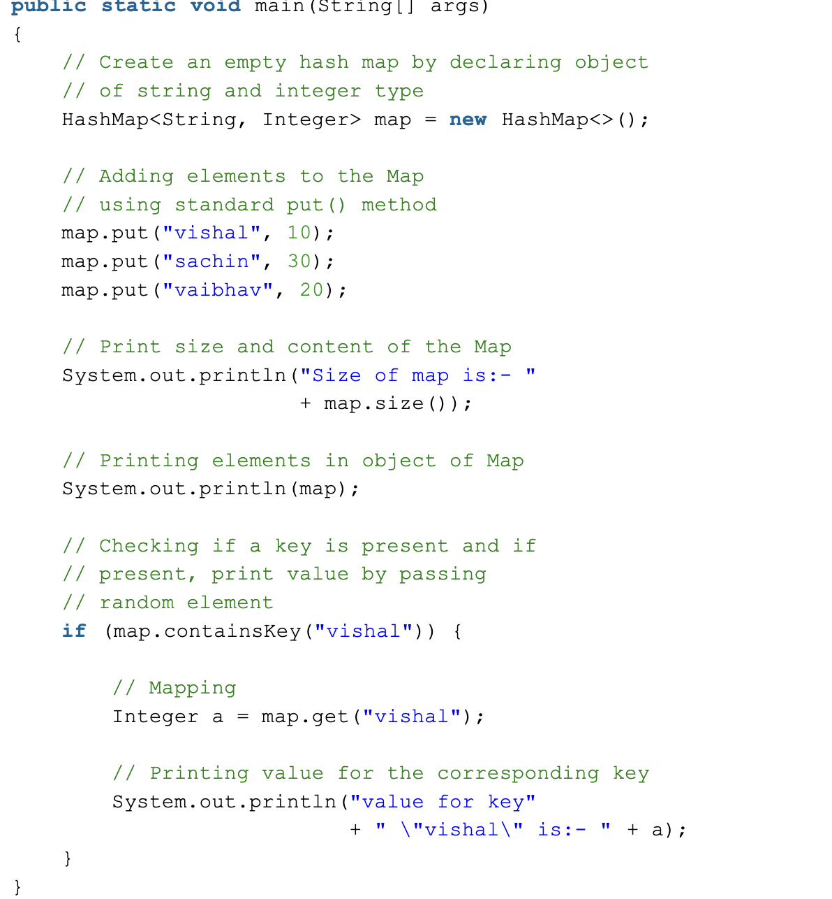

What is a hashmap?
A HashMap is a data structure used to store key-value pairs. It allows for the efficient lookup, insertion, and deletion of any entry based on its key. HashMaps achieve this efficiency by using a function called a hash function, which converts the key into an index of an array in which the values are stored.

When would you use a hashmap?
- Useful when we need efficient implementation of search, insert and delete operations.
- Database indexing: Hashing is used to index and retrieve data efficiently in databases and other data storage systems.
- Search algorithms: Hashing is used to implement search algorithms, such as hash tables and bloom filters, for fast lookups and queries.
Example of declaring a hashmap in Java:
